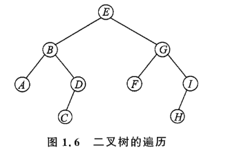

1. 基础数据结构&算法
1.1 基础数据结构
1.1.1 链表
可以用C++的STL list, 也可以手搓链表(动态&静态)，下面我会写一下基本的框架以及一道例题(洛谷P1996)。题目如下：
P1996 约瑟夫问题
n 个人围成一圈，从第一个人开始报数，数到 m 的人出列，再由下一个人重新从 1 开始报数，数到 m 的人再出圈，依次类推，直到所有的人都出圈，请输出依次出圈人的编号。
动态链表
使用结构体去表示一个节点，然后用指针把他们连接起来就好(这里使用单向链表)。
#include <bits/stdc++.h>
using namespace std;
struct node{
int value;
node* next;
};
int main(){
// int n,m; cin>>n>>m;
node *head, *cur,*p;
head=new node;
head->value=1;
head->next=NULL;
cur=head;
//创建循环链表
for(int i=2;i<=n;i++){
p=new node;
p->value=i;
p->next=NULL;
cur->next=p;
cur=p;
}
cur->next=head;
//题目的具体解答
cur=head;
node *prev; prev=head;
while(n>1){
for(int i=1;i<m;i++){
prev=cur;
cur=cur->next;
}
//cout<<cur->value;
prev->next=cur->next;
delete cur;
cur=prev->next;
n--;
}
//cout<<cur->value;
delete cur;
return 0;
}
静态链表
结构体数组实现单向链表
#include <bits/stdc++.h>
using namespace std;
const int N=1000;
struct node{
int value,next;
}nodes[N];
int main(){
//int n,m; cin>>n>>m;
nodes[0].next=1;
for(int i=1;i<=n;i++){
nodes[i].value=i;
nodes[i].next=i+1;
}
nodes[n].next=1;
//题目的具体解答
int cur=1,prev=1;
while(n>1){
for(int i=0;i<m-1;i++){
prev=cur;
cur=nodes[cur].next;
}
//cout<<nodes[cur].value;
nodes[prev].next=nodes[cur].next;
cur=nodes[prev].next;
n--;
}
//cout<<nodes[cur].value;
return 0;
}
结构体数组实现双向链表
#include <bits/stdc++.h>
using namespace std;
const int N=1000;
struct node{
int value,next,prev;
}nodes[N];
int main(){
//int n,m; cin>>n>>m;
nodes[0].next=1;
for(int i=1;i<=n;i++){
nodes[i].value=i;
nodes[i].next=i+1;
nodes[i].prev=i-1;
}
nodes[n].next=1;
nodes[1].prev=n;
//题目的具体解答
int cur=1;
while(n>1){
for(int i=0;i<m-1;i++){
cur=nodes[cur].next;
}
//cout<<nodes[cur].value;
nodes[nodes[cur].prev].next=nodes[cur].next;
nodes[nodes[cur].next].prev=nodes[cur].prev;
cur=nodes[cur].next;
n--;
}
//cout<<nodes[cur].value;
return 0;
}
一维数组实现单向链表
#include <bits/stdc++.h>
using namespace std;
int nodes[1000];
int main(){
//int n,m; cin>>n>>m;
for(int i=1;i<n;i++){
nodes[i]=i+1;
}
nodes[n]=1;
int cur=1,prev=1;
while(n>1){
for(int i=0;i<m;i++){
prev=cur;
cur=nodes[cur];
}
nodes[prev]=nodes[cur];
cur=nodes[cur];
n--;
}
cout<<cur;
return 0;
}
STL 链表
#include <bits/stdc++.h>
using namespace std;
int main(){
//int n,m;cin>>n>>m;
list<int> nodes;
for(int i=1;i<=n;i++){
nodes.push_back(i);
}
auto it=nodes.begin();
while(nodes.size()>1){
for(int i=0;i<m-1;i++){
it++;
if(it==nodes.end()) it=nodes.begin();
}
// cout<<*it;
auto next=++it;
if(next==nodes.end()) next=nodes.begin();
nodes.erase(--it);
it=next;
}
//cout<<*it;
return 0;
}
1.1.2 队列
STL queue
queue<Type> q; //定义
q.push(item); //进队
q.pop(); //出队
q.front(); //return 队头
q.back(); //return 队尾
q.size(); //size
q.empty(); //empty?
双端队列
deque<Type> dq;
dq[i];
dq.front();
dq.back();
dq.pop_front();
dq.pop_back();
dq.push_front(e);
dq.push_back(e);
单调队列/滑动窗口
- 单调队列其实就是你一直在维持一个有序的队列,你可以很方便地知道队列里的最大值和最小值。
- 滑动窗口其实就是一个不断进队出队的过程(维持一个窗口)
这里给一个例题
P1886 【模板】单调队列 / 滑动窗口
有一个长为 \(n\) 的序列 \(a\)，以及一个大小为 \(k\) 的窗口。现在这个窗口从左边开始向右滑动，每次滑动一个单位，求出每次滑动后窗口中的最小值和最大值。
例如，对于序列 \([1,3,-1,-3,5,3,6,7]\) 以及 \(k = 3\)，有如下过程：
| 窗口位置 | 最小值 | 最大值 |
|---|---|---|
[1 3 -1] -3 5 3 6 7 |
-1 | 3 |
1 [3 -1 -3] 5 3 6 7 |
-3 | 3 |
1 3 [-1 -3 5] 3 6 7 |
-3 | 5 |
1 3 -1 [-3 5 3] 6 7 |
-3 | 5 |
1 3 -1 -3 [5 3 6] 7 |
3 | 6 |
1 3 -1 -3 5 [3 6 7] |
3 | 7 |
解答：
#include <bits/stdc++.h>
using namespace std;
int main(){
int n,k; cin>>n>>k;
vector<int> a(n);
deque<int> q;
for(int i=0;i<n;i++){
cin>>a[i];
}
for(int i=0;i<n;i++){
while(!q.empty() && a[q.back()]>a[i]) q.pop_back();
q.push_back(i);
if(i>=k-1){
while(!q.empty() && i-q.front()+1>k) q.pop_front();
cout<<a[q.front()]<<" ";
}
}
cout<<endl;
while(!q.empty()) q.pop_front();
for(int i=0;i<n;i++){
while(!q.empty() && a[q.back()]<a[i]) q.pop_back();
q.push_back(i);
if(i>=k-1){
while(!q.empty() && i-q.front()+1>k) q.pop_front();
cout<<a[q.front()]<<" ";
}
}
return 0;
}
1.1.3 栈
同理我们也有单调栈，和单调队列一样我们需要维持队列的有序
P2947 [USACO09MAR] Look Up S
约翰的 \(N(1\le N\le10^5)\) 头奶牛站成一排，奶牛 \(i\) 的身高是 \(H_i(1\le H_i\le10^6)\)。现在，每只奶牛都在向右看。对于奶牛 \(i\)，如果奶牛 \(j\) 满足 \(i<j\) 且 \(H_i<H_j\)，我们可以说奶牛 \(i\) 可以仰望奶牛 \(j\)。 求出每只奶牛离她最近的仰望对象。
#include <bits/stdc++.h>
using namespace std;
int main(){
int n; cin>>n;
vector<int> cows(n+1),res(n+1);
stack<int> st;
for(int i=1;i<=n;i++) cin>>cows[i];
for(int i=n;i>=1;i--){
while(!st.empty() && cows[i]>=cows[st.top()]) st.pop();
if(st.empty()) res[i]=0;
else res[i]=st.top();
st.push(i);
}
for(int i=1;i<=n;i++){
cout<<res[i]<<endl;
}
return 0;
}
1.1.4 二叉树&哈夫曼树
动态二叉树
#include <bits/stdc++.h>
using namespace std;
struct Node{
int value;
Node *left,*right;
};
int main(){
return 0;
}
静态二叉树
#include <bits/stdc++.h>
using namespace std;
const int N=1000;
struct Node{
int value;
int left,right;
}Nodes[N];
int main(){
return 0;
}
更简洁的表示完全二叉树
假设根节点是1，后续节点：2,3,4,...,k. 那么：
- 节点 \(i(i>1)\) 的父节点为：
i/2; - 若 \(2*i>k\)，节点 \(i\) 没有叶子节点；若 \(2*i+1>k\)，节点 \(i\) 没有右子节点
- 若节点 \(i\) 有右子节点，那么它的左子节点为 \(2*i\)，右子节点为 \(2*i+1\)
二叉树遍历
拿一个图来举例，如下：

- BFS:
E-BG-ADFI-CH
//动态二叉树Node
void BFS(Node* start){
if(start==nullptr) return;
queue<Node*> q;
q.push(start);
while(!q.empty()){
Node* u=q.front();
q.pop();
cout<<u->value;
if(u->left) q.push(u->left);
if(u->right) q.push(u->right);
}
}
- DFS(preorder):
EBADCGFIH
//动态二叉树Node
void preorder(Node* start){
if(start==nullptr) return;
cout<<start->value;
preorder(start->left);
preorder(start->right);
}
- DFS(inorder):
ABCDEFGHI
//动态二叉树Node
void inorder(Node* start){
if(start==nullptr) return;
inorder(start->left);
cout<<start->value;
inorder(start->right);
}
- DFS(postorder):
ACDBFHIGE
//动态二叉树Node
void postorder(Node* start){
if(start==nullptr) return;
postorder(start->left);
postorder(start->right);
cout<<start->value;
}
哈夫曼树 & 哈夫曼编码
二叉树越平衡，树的路径长度(根节点到每个叶子节点的距离之和)是越短的,然而这里是默认不带权的，如果链接节点之间的边带权，那么一个平衡的二叉树的路径长度未必是最小的。所以这就是哈夫曼树需要去解决的，步骤如下：
- 把每个权值构造成一棵只有一个节点的树，\(n\) 个权值构成了 \(n\) 棵树，记为集合 \(F = \{T_1, T_2, \cdots, T_n\}\)
- 在 \(F\) 中选择权值最小的两棵树 \(T_i\) 和 \(T_j\)，合并为一棵新的二叉树 \(T_x\)，它的权值等于 \(T_i\) 与 \(T_j\) 的权值之和，左右子树分别为 \(T_i\) 和 \(T_j\)
- 在 \(F\) 中删除 \(T_i\) 和 \(T_j\)，并把 \(T_x\) 加入 \(F\)
- 重复步骤（2）和步骤（3），直到 \(F\) 中只含有一棵树，这棵树就是哈夫曼树
P1087 [NOIP 2004 普及组] FBI 树
题目描述
我们可以把由 0 和 1 组成的字符串分为三类：全 0 串称为 B 串，全 1 串称为 I 串，既含 0 又含 1 的串则称为 F 串。
FBI 树是一种二叉树，它的结点类型也包括 F 结点，B 结点和 I 结点三种。由一个长度为 \(2^N\) 的 01 串 \(S\) 可以构造出一棵 FBI 树 \(T\)，递归的构造方法如下：
- \(T\) 的根结点为 \(R\)，其类型与串 \(S\) 的类型相同；
- 若串 \(S\) 的长度大于 \(1\)，将串 \(S\) 从中间分开，分为等长的左右子串 \(S_1\) 和 \(S_2\)；由左子串 \(S_1\) 构造 \(R\) 的左子树 \(T_1\)，由右子串 \(S_2\) 构造 \(R\) 的右子树 \(T_2\)。
现在给定一个长度为 \(2^N\) 的 01 串，请用上述构造方法构造出一棵 FBI 树，并输出它的后序遍历序列。
输入格式
第一行是一个整数 \(N(0 \le N \le 10)\)，
第二行是一个长度为 \(2^N\) 的 01 串。
输出格式
一个字符串，即 FBI 树的后序遍历序列。
输入输出样例 #1
输入 #1
输出 #1
说明/提示
对于 \(40\%\) 的数据，\(N \le 2\)； 对于全部的数据，\(N \le 10\)。
#include <bits/stdc++.h>
using namespace std;
typedef long long ll;
struct Node{
char v;
Node* left;
Node* right;
};
void postorder(Node* start){
if(start==nullptr) return;
postorder(start->left);
postorder(start->right);
cout<<start->v;
}
vector<int> N={1,2,4,8,16,32,64,128,256,512,1024};
int main(){
int n; cin>>n;
int len=N[n];
Node* m;
string str;
cin>>str;
queue<Node*> q;
for(char c : str){
m = new Node;
if(c=='0') m->v='B';
else m->v='I';
m->left=nullptr;
m->right=nullptr;
q.push(m);
}
while(q.size()!=1){
Node* node1=q.front(); q.pop();
Node *node2=q.front(); q.pop();
m=new Node;
if(node1->v=='B' && node2->v=='B') m->v='B';
else if(node1->v=='I' && node2->v=='I')m->v='I';
else m->v='F';
m->left=node1;
m->right=node2;
q.push(m);
}
postorder(q.front());
return 0;
}
1.1.5 堆
二叉堆手写代码（小根堆）
#include <bits/stdc++.h>
using namespace std;
typedef long long ll;
const int N=1e6+5;
int heap[N], len=0;
//上浮
void push(int x){
heap[++len]=x;
int i=len;
while(i>1 && heap[i]<heap[i/2]){
swap(heap[i],heap[i/2]);
i/=2;
}
}
//下沉
void pop(){
heap[1]=heap[len--];
int i=1;
while(2*i<=len){
int son=2*i;//选中左儿子
if(son<len && heap[son+1]<heap[son]){
//看有没有右儿子，并选中儿子中较小的那一个
son++;
}
if(heap[son]<heap[i]){
swap(heap[son],heap[i]);
i=son;
}
else break;
}
}
int main(){
int n; cin>>n;
while(n--){
int operation; cin>>operation;
if(operation==1){
//进堆
int x; cin>>x;
push(x);
}
else if(operation==2){
//出堆
cout<<heap[1];
}
else{
pop();
}
}
return 0;
}
优先队列
priority_queue<int, vector<int>, greater<int>> pq; // 小根堆
priority_queue<int> pq; // 大根堆（默认）
pq.push(x); // 进堆
pq.pop(); // 出堆
pq.top(); // 返回堆顶
pq.size(); // 大小
pq.empty(); // 判空